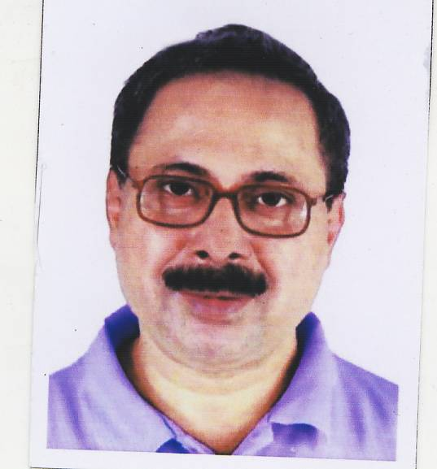

|  |
Bidyut Kumar SarkarM.B.B.S and M.S (Orthopaedic Surgery), Self-Educated (Web of Consciousness) R. G. Kar Medical College & Hospital (Calcutta University) West Bengal India bidyut.srkr@gmail.com
|
About Me
Since the memorable past curiously I possessed a quest towards the Origin of us, our Universe and unified network of universal Existence. After completion of higher secondary level of education, I completed my study in 1st year Engineering in Jadavpur University in Mechanical Engineering. Later choosed Orthopedic Surgery, principally based on biomechanics accepting that stream in my next professional career. In this journey, since 1986, serially I served DPL Hospital – Durgapur, TELCO Main Hospital – Jamshedpur and Siliguri District Hospital as Orthopedic Surgeon. Presently I am doing private consultation practice in Orthopedic Surgery in Siliguri.
I participated in an International Workshop with my presentation 'A New Proposition in Gait Analysis' in 'International Workshop on Complex Dynamics of Physiological Systems: from Heart to Brain' organised by Department of Physics, Presidency College, Kolkata - February 12—14, 2007.
Along my subtle primitive drive to delve into our fundamental source of origin I continued self-education in my leisure times. I studied higher mathematics and physics giving priority to grasp relevant topics more conceptually rather than study guided by institutional syllabus. Approximately since the year 2000 I started working on a Theoretical Model: ‘A Hypothetical Cognitive Model’, based on topological origami. The project is highlighted as ‘Complex Möbius Field’ that get exposed through six International Publications. My study in medical science helped extend my further interest in understanding complex dynamics and in the Project on Consciousness. My working experience in Orthopedic Surgery incited many new concepts within me including some new complementary Basic Operators e.g., Untwistor, Unspinnor, Windlass.
Research
|
Chinmoy K. Bose, Bidyut K. Sarkar, Herbert Jelinek [2009], “Role of Nonlinear Dynamics in Endocrine Feedback,” Chaos and Complexity Letters (Volume 3, Issue 3), 266-69.
Website |
|
Bidyut K. Sarkar, 2021, “Consciousness & Instrumental Astronomy”, Journal of Consciousness Exploration & Research, 12(3): pp. 278-286.
Paper, Website |
|
Bidyut K. Sarkar, 2021, “Pulsatile Macroscopic Quantum Consciousness”, Journal of Consciousness Exploration & Research, 12(1): pp. 43-54.
Paper, Website |
|
Bidyut K. Sarkar, 2020, “’Complex Möbius Field: The Web of Consciousness’ Revisited”, Journal of Consciousness Exploration & Research, 11(2): pp. 227-235.
Paper, Website |
|
Bidyut K. Sarkar, 2019, “Complex Möbius Field: The Web of Consciousness” - Part II, Journal of Consciousness Exploration & Research, 10(1): pp. 48-64.
Paper, Website |
|
Bidyut K. Sarkar, 2019, “Complex Möbius Field: The Web of Consciousness” - Part I, Journal of Consciousness Exploration & Research, 10(1): pp. 24-47.
Paper, Website |
News
Some news this fine day!
Contact
Get in touch, or swing by for a cup of coffee.
About
Who we are and what we do.